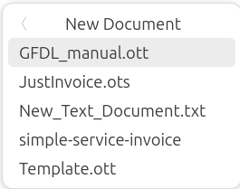

Using Ubuntu
 KEY TAKEAWAYS
KEY TAKEAWAYS
- It's surprising easy switch from MS Windows to Ubuntu 24.04
- There are no license fees to use Ubuntu
- Ubuntu's desktop and files manager are very similar to Windows 10
- You can customize so many things in Ubuntu that you can't customize in Windows
It's surprisingly easy to switch from Microsoft Windows to Ubuntu 24.04.The basic operation of the Ubuntu desktop is similar to Windows. The file manager (Files) is similar to Windows Explorer and of course, Chrome or Edge work just like they do in Windows including syncing, extensions, etc. There is a keyboard button called the superkey (on most keyboards it will have the Windows logo) just like the Windows key. You tap it and search for an application or pick from the running applications.
So, what is the hard part? Things like killing a hung application, searching for files from the terminal, and checking free disk space are different and will take a little getting used to. It's a lot like working on Cisco IOS for years and then having to work on an Aruba or Juniper switch. At first, it's frustrating, you have to look up commands and do some things differently.
The reason for this guide is to help get you past the hurdles so that you can start enjoying Ubuntu. I promise that if you get over the hump your productivity as a network engineer will soar. Since MacOS is based on Open BSD Unix, once your muscle memory is up to speed you can jump back and forth easily between Windows, Mac and Linux. In a later chapter I will discuss the terminal tools that make Linux so much fun and so powerful for a network engineer.
Desktop Environments in Linux
One of the big advantages for Linux is that you can customize almost everything since it's open source. You can change the terminal you use, the file manager, the way almost anything works and even the desktop itself.
The first choice you have to make with Ubuntu is which Desktop Environment do you want to use. The two most popular desktop environments (DE) for Linux are Gnome (Ubuntu’s default), and KDE (which is available on Ubuntu) but there are many more. Gnome is the most popular Desktop Environment in Linux and I just learned to customize Gnome to fit my workflow. Here is a TecMint article on Desktop Environments that will explain the differences between them. My advice is to start out with Ubuntu and Gnome until you are comfortable.
I listen to a lot of podcasts on Linux and KDE, XFCE and MATE are highly recommended desktop environments (DE) that you may like better than Gnome. If you watched the second episode of Mr. Robot (Season 1 – which I highly recommend) there is a scene were an executive tells Elliot that he runs KDE but understands why Elliott prefers Gnome.
These two short YouTube videos sum it up better than I can:
- 6 Things to Know When Switching to Linux from Windows
- 10 things you can do with Linux that you can't do with Windows
Podcasts on Linux
There are a lot of podcasts dedicated to Linux. In your podcast application just search Linux. My favorites are:
- Destination Linux - A weekly podcast on general Open Source topics.
- Late Night Linux - A weekly podcast on Linux and the wider tech industry. NOTE: Lots of F bombs!
- Linux After Dark - A weekly podcast on Linux experiences.
- Linux Dev Time - A weekly podcast on Developing on Linux
- Linux Downtime - A weekly podcast "From working in the Industry and progressing your career, to managing a project's community"
- Linux Unplugged - A weekly podcast on Linux by Jupiter Broadcasting. Covers news and applications for Linux.
- This Week in Linux - A weekly podcast on Linux
Casting your display
I have a Vizio “Smart” TV with Chromecast built in. Using the Chrome browser I can click the three dot menu on the right and select “Cast...” to send the output to the TV.
In VLC, select “Playback, Renderer” to send VLC’s output to the TV. I don’t have a Chromecast dongle, but I am guessing it would work the same way as the Vizio TV.
Using RDP to share the Ubuntu desktop
Ubuntu 24.04 has an RDP server built in. To enable it:
- Tap the
super key(Windows key on some laptops), typesettingsand pressenter. - In the top left corner of the screen click on the magnifying glass, type rdp.
- Click on the resulting
System - Click on
Remote Desktop, enableDesktop SharingandRemote Control - Under
login details, click on the eyeball icon so show the password - Add port 3389 to the firewall using
sudo ufw allow from any to any port 3389 proto tcp
You can now use Windows RDP or any RDP client to connect to your laptop!
For a more detailed tutorial see Ubuntu Remote Desktop Access from Windows 10/11
Working with Applications
Like in Windows, there are many ways to open applications in Gnome.
The Super Key
You can hit the Windows key (Superkey is what it's called in Ubuntu) to bring up a search box.
Notice that the files application icon has two dots on the left side. That's because I have two separate windows open. If you click on the icon, the screen will change to show the two files windows.
Search for an application
To open an application using search, simply tap the super key and start typing the name of the application in the search box. As you type, all the matching applications will be displayed below the search box. If the one you want is the first one displayed on the left you can just hit enter. If not, keep typing and the list of displayed applications will get smaller. In the screenshot below, hitting enter will open the built in calculator app. Right arrow, Enter will open LibreOffice Calc!
You can also use the mouse and click on any application that is displayed to open it.
Switching Applications
Tap the super key (Windows key on some keyboards). Below the search box are the applications that are currently running. If you want to switch to one of the open applications, you can use the Tab key and [enter] or use the mouse to select one of the running applications.
You can also use ctrl+tab just like in Windows.
Finally, you can use the dock to open applications that you have pinned to it and switch to an open application.
Viewing all installed applications
The dock has a small icon at the bottom, it’s three rows of three dots. You can click that icon to see the installed applications in a window.
If there are too many to display, a column of circles will appear at the bottom of the screen and and an arrow on the right side. You can scroll down with the mouse button, click on one of the circles or click the arrow on the right to jump to the next page. As you can see, it’s very easy to open applications in Ubuntu.
Note
Ubuntu 24.10 has changed the icon to an Ubuntu icon instead of the dots.
Switching between multiple open windows in the same application
If you have several copies of the same application open you can switch between them using the super key + ~ key (the key to the left of 1 on a US keyboard). You can also bring up the dock, click on the application icon and then select the one you want but the keyboard is much easier and faster.
For Example, in LibreCalc I often have a lot of spreadsheets open. To switch to a different sheet I can use the super + ` key combination. On a US keyboard that is the key to teh left of the 1 key. Here is a screenshot of two spreadsheets.

Configuring the Dock
Like Windows and Mac, Ubuntu with the Gnome DE has a dock. You customize the dock using the Gnome Settings application. To open the Gnome Settings application, click on "Activities Overview" icon at the top right corner of the screen, then select the gear icon. This will open the "settings" application. It’s very similar to “System Preferences” on the Mac or Control Panel on Windows.
At the top left corner of the screen there is a magnifying glass. Click it and enter "dock". The dock is under "Ubuntu Desktop".
One thing I do to help me use all three operating systems is to customize the dock to be similar across all OSes. I set Windows, Mac and Linux to display it on the left because I am almost 100% of the time on a laptop and the screen is wider than it is high. I also set the dock to auto-hide and display a few commonly used apps.
Using the super key and typing the first few letters is now my preferred work flow rather than clicking on an icon in the dock. One thing I like about Ubuntu is that when I’m using multiple monitors it puts the dock on all the monitors.
Customizing Gnome - The Tweaks Tool
Ubuntu ships with Gnome as the desktop environment (DE). Unlike Windows, Linux distributions can use a lot of different desktop environments (DE). Gnome is the default desktop environment for Ubuntu and Redhat (CentOS) so it has a large percentage of the desktop market in Linux. If you want to try others there are several official flavors of Ubuntu that you can download from Canonical.
First, install the Gnome Tweak Tool. This tool allows you to change a lot of the Gnome settings to your preference. Open a terminal window, ctrl+alt+t, and type the following:
sudo apt install gnome-tweak-tool
Press [enter], you will be prompted for your password because of sudo, and the install will start. When it finishes, hit the super key, type
tweaks
and hit [enter].
Startup Applications
Gnome Tweaks is where you set the applications that run on startup. I try to keep these to a minimum. It's easy to forget that some application you don't use anymore is automatically starting and using system resources.
There are a lot of options that you can "tweak" with the tool. I don't make a lot of changes but I do like having the Top Bar show Day, Data and Time.
Display Asterisks when typing passwords
By default Ubuntu doesn't display anything when you type a password. This annoys some users. Here is how to add Asterisks.
Ubuntu provides a terminal tool called visudo to modify the /etc/sudoers file. This tool is a safety blanket that will catch a lot of mistakes when you try to exit. If you bork the file bad enough the system won't log in! Digital Ocean has a tutorial on editing the sudoers file.
Warning
Never edit this file with a normal text editor! Always use the visudo command instead! Because improper syntax in the /etc/sudoers file can leave you with a broken system where it is impossible to obtain elevated privileges, it is important to use the visudo command to edit the file.
The visudo command opens a text editor like normal, but it validates the syntax of the file upon saving. This prevents configuration errors from blocking sudo operations, which may be your only way of obtaining root privileges.
Traditionally, visudo opens the /etc/sudoers file with the vi text editor. Ubuntu, however, has configured visudo to use the nano text editor instead. Before running visudo use the following command to verify what editor will be used:
sudo update-alternatives --config editor
[sudo] password for mhubbard:
There are 9 choices for the alternative editor (providing /usr/bin/editor).
Selection Path Priority Status
------------------------------------------------------------
* 0 /usr/bin/joe 70 auto mode
1 /bin/ed -100 manual mode
2 /bin/nano 40 manual mode
3 /usr/bin/jmacs 50 manual mode
4 /usr/bin/joe 70 manual mode
5 /usr/bin/jpico 50 manual mode
6 /usr/bin/jstar 50 manual mode
7 /usr/bin/rjoe 25 manual mode
8 /usr/bin/vim.basic 30 manual mode
9 /usr/bin/vim.tiny 15 manual mode
Press <enter> to keep the current choice[*], or type selection number:
You can see that I changed the default to the joe editor. Joe can handle massive text files and I do a lot of password hash cracking so I need to open word lists that are 100's of MBs in length. Joe easily handles that but it uses non-standard keys for save, exit, etc.
I suggest leaving nano as the default if you are new to Ubuntu.
Open the sudoers file with visudo
Scroll down till you see Defaults env_reset and add ,pwfeedback. The end result will be Defaults env_reset,pwfeedback. Press ctrl+s to save the file and ctrl+x to exit.
Now you will see Asterisks when typing a password:
$ sudo nmap -vv --script ssl-cert,ssl-enum-ciphers -p 443 192.168.10.253
[sudo] password for mhubbard: ********
Using the GUI Files application
Files is the file manager for Gnome. The Gnome team is very creative with application names! The text editor is named "Text Editor", I kid you not. It makes Googling for tips a bit of a challenge.
File used to be named nautilus and you can still launch the application from the terminal using nautilus. If you are having an issue with Files starting, for example you get a dialog saying "Files is not responding" with a Force quit and a Wait button you, go ahead and Force Quit it. Then open a terminal and type nautilus. If it fails to open you will get detailed output that should point you in the right direction to solve the problem.
I am bringing this up because I installed a bunch of Gnome extensions a while back and one of them caused nautilus to hang. I got the logs from the terminal and and found this on article on bugs.launchpad.net. Running systemctl mask --user --now tracker-miner-fs-3.service fixed the issue with nautilus hanging. But searching with the word files would be a waste of time.
Options I always use in Files
If you click on the hamburger menu, or press ctrl+, you will see Preferences.
The General options that I always enable:
- Sort Folders Before Files
- Expandable Folders in List View
The Expandable Folders option puts a > symbol beside the folder name. Clicking the symbols expands the folder
The Optional Context Menu Actions that I always enable:
- Create Link - Creates a shortcut to the file you have highlighted
- Delete Permanently - Allows you to skip the Trashcan

The Grid View Cations that I always enable:
- First - size
- Second - Created
- Third - type

Tabs
Files works great and has a feature I love – Tabs! Once you get used to having tabs in your file manager it’s hard to use Windows Explorer! Below is a screenshot with three tabs open. You can see how convenient this is. On a Mac, the Finder app has tabs. I don’t know why Windows doesn’t.
Note
From PCWorld
Remember, tabs within File Explorer were not part of the Windows 11 2022 Update (22H2) — they were added as part of a later separate update. It’s all part of the new “Moments” strategy that Microsoft has implemented to add new features at unexpected times.
Open a new Tab
You can use the keyboard shortcut ctrl+t to create a new tab or click the Hamburger menu and select New Tab. This will open the current folder in a new tab.
If your mouse has a center button, you can select a folder and click it to open the selected folder in a new tab! That is a big time saver.
The Files right Click menu
Files has an extensive right click menu. Here are the options for the folder Scripts. You can see the > symbol beside the folder name.
I use the list view to list files. Unlike with the Icon view, there isn't an open space to right click on is you want to create a nw folder or paste a file. But, you can right click just to the left of the list of folders to bring up the an options menu. See the next image:
The dialog has options for:
- New Folder - Create a new folder.
- New Document - Create a new document based off of a template.
- Open With... - This is an odd one. It allows you to select an application to - open a new folder with.
- Paste - If you have copied a file, a Paste menu will appear, otherwise it's greyed out.
- Paste as link - Similar to a
shortcuton Windows. - Select All - Selects all folders.
- Visible Columns - This opens a dialog where you can choose which columns are visible.
- Open in Terminal - Opens the Ubuntu Terminal in this folder.
- Open as Administrator - Open a new window running with root privileges.
- Properties - Shows the size of the folder and the permissions of the folder.
New Document
You can create templates in the /home/$USER/templates folder for the document types that you use on a regular basis. To create a template:
- Open the application you want to create a template for
- Set any options for the template or enter text if it's a document.
- Save the file in the
/home/$USER/templatesfolder. For example, my template folder is/home/mhubbard/templates
I wanted a plain text template so I opened Text Editor and saved the blank document as New_Text_Document.txt in the templates folder. Now when I right click I can select New_Txt_Document.txt for a blank text file.
I right clicked over the New_Text_Document.txt file and selected Open With then set VS Code as the Always use for this type of file option.
You can also create LibreOffice templates. The templates that end in .ott are for LibreOffice Writer and templates that end in .ots are for LibreOffice Calc.

Visible Columns
There are a lot of options for which columns to display:
I like the detailed Type option. Here is a screenshot of what is displayed:
Open as Administrator
This one is very useful is you like to use GUI applications for files that require root privileges. You can also click your mouse into the address bar and type admin: to change the current window to root. You will be prompted for your password. Then you can open files as root.
Keyboard shortcuts
Gnome Files has a lot of keyboard shortcuts. You click the hamburger menu and select Keyboard Shortcuts or press ctrl+? to open a dialog displaying the shortcuts. There are 3 pages of them!
Creating archives
From the right click menu you can select "Compress..." to create an archive. The Compress... menu supports:
- zip
- 7zip (Must install 7z
sudo apt install 7zip) - tar.xz
Display the Full path in files
Sometimes you want to copy the full path to a file when working in the file manager. Hit ctrl+l (lowercase el) and the path will change to a format that you can copy.
Easily preview files in Files
One thing I missed from Windows Explorer was the preview pane. In Ubuntu running the Gnome desktop you can install "Sushi" to preview files. Then you just hit the space bar to preview a supported file format.
To install GNOME Sushi using Ubuntu Software, open a terminal and paste the following code in:
For a more detailed description see How to Quickly Preview a File in Ubuntu's File Manager (Like "Quick Look" in macOS)
Resize/Rotate images
Gnome provides a package that adds resize and rotate capabilities for the Files application. I find this package very useful when creating documentation.
To install the Nautilus Image Converter, open a terminal and paste the following code in:
Now when you right click on an image file, you will see an option to resize and an option to rotate.
Completely wipe files and folders from the disk
Nautilus provides an extension to wipe files securely and fill the empty places so that data can not be recovered anymore. This is not a quick operation, it can takes minutes or hours depending on the size of the file.
To install the Nautilus Image Converter, open a terminal and paste the following code in:
Get the list of recently visited directories
On the top left, right-click on the back arrow to get the list of previously visited folders.

Search
The completely new "Files" application in Gnome 46 (Ubuntu 24.04) is amazing. Here is the announcement from the project Introducing GNOME 46, “Kathmandu”
One of the best features in Files is the new search. Just click on the magnifying glass next to the address bar and enter some text. Unlike in Windows, you can enter text that is in the middle of the filename. In the screenshot below, I entered "new" and it found "frequent-new.png" in a directory one level down.
You can click on the funnel icon after you open search and filter on:
- Date
- Created
- Last Modified
- Last Used
- What - There are well over 100 file types to choose from
- Full Text or Filename
Ubuntu has an article on using the new feature here: Search for files
Ubuntu also has a Common Tasks page for Files
Custom folder icons in Files
You can change the icon for a folder in the Files application. Right click on a folder, and select Properties from the menu. Look at the lower right of the folder icon and you will see pencil icon. Click the Pencil and a Select Custom Icon dialog will open. Navigate to a folder containing icons and select the one you want.
Here is the icon I have set for the folder containing the files for this project:
Custom folder Icon - An article from OMG Ubuntu on setting custom folder icons
I have a red Lock icon on a file or folder
Files, like every other GUI file manager, uses icons to represent files and folders. If the icon has a green check mark in it, you have full access to the file or folder.
If the icon has a red lock in it, you don’t have full permissions to the file or folder. Here is a screenshot of Files showing a file with a red x.
To take ownership of the file, open the terminal and enter:
sudo chown mhubbard testsync.txt
You will be prompted to enter your password.
I have a grey X on a file or folder
If the file has a grey square icon with an X in it the file is read only.
Access the root folder
To navigate to the root of the file system, click into the address bar, type \ and press enter. To create a bookmark for root press ctrl+d while in the root folder.
Here is a screenshot of the bookmark

Access the root folder as admin
In the Files application, click into the address bar, type admin:// and press enter. You will be prompted for your user password.
Here is a screenshot showing that we are in the folder as administrator.

As always, BE CAREFUL when you are the administrator!
References for the Files app
- Meaning of files-folders with a red x
- 10 tips for Gnome Files - A 10 minute video that is worth watching.
- Access Root Directory in Nautilus File Manager
Creating a bootable USB stick from an ISO image
You don't need a third-party tool to create a bootable USB stick on Linux if you don't mind using the terminal.
Use dd to make bootable flash
Note
Ubuntu uses a system called "snaps" to sandbox applications. The drawback to snaps is that they mount every application using a "squashfs". I use the following alias so that I don't have to see all the applications.
alias df="df -h --exclude=squashfs"
To add the alisa to bash:
Depending on what your shell is. The default shell is bash. I will go over changing the shell to zsh later on.
If you create the alias you can use df -h instead of including the --exclude=squashfs option.
- run df -h --exclude=squashfs
- Insert the flash drive
- run df -h --exclude=squashfs
Look for a new entry in the table. For example, on my laptop I have two flash drives mounted.
The two flash drives are /dev/sdc1 and /dev/sdb1. I can tell because they are listed as /media/mhubbard which is the mount point for the flash drives.
In this example I am burning System Rescue to the flash drive. Parameters:
- if - input file name
- of - output filename
- bs - Block size to use
- status=progress - display progress
- && sync - In Linux the "&&" means finish the first command then run the next command. In this case sync the writes to make sure it's ejected cleanly Enter the following:
dd if=systemrescue.iso of=/dev/sdb bs=10M status=progress && sync
Be careful if you use this method
dd is commonly referred to as "disk destroyer", meaning that it starts as soon as you hit enter, there are no "Are you sure" prompts.
MAKE SURE THAT YOU HAVE THE OF (output file) SET TO THE FLASH DRIVE!!
Use the Ubuntu "Make Startup disk" tool
You can use the built in “Startup disk creator” by tapping the super key (Windows Key) and typing start. You will see the Startup disk icon:
- Pick the ISO image from the “Source disc image (.iso)” drop down
- Then select the USB stick from "Disk to Use"
- Click “Make Startup Disk”
- You will be prompted to select "Yes or No"

In this example, I am burning Kali Linux 2023.3 to the flash drive.
Use qemu to test a startup disk
You can install qemu and create a simple virtual machine to test a startup disk. I'm not going to cover that but these two articles will explain.
Working with the Linux File System
If you have been a Windows user for a long time the hardest part of switching to Linux is the file system. There is no concept of drive letters in Linux. The Linux file system is based on the “File system Hierarchy Standard” maintained by the Linux Foundation.
The top of the Linux file system is called the root. All files and directories are referenced from the root, even if they are stored on different physical or virtual devices. That is so different from Windows that it will take some time to get comfortable with.
Here is a link to a great tutorial on the Linux file system by Abhishek Prakash - Linux Directory Structure Explained for Beginners. His tutorial will get you up to speed on the Linux file system. Abhishek creates Linux tutorials and I recommend that you sign up for his newsletter. The subscribe button is at the top of the page.
On Windows you have drive letters and the root of the file system is the “\” character – The good old C:. But Linux/Mac, or any *NIX for that matter, doesn’t use drive letters. The file system is usually described as a tree with root at the beginning. Root is shown in the file system as /. Everything is then displayed off the root. The “/” is another difference that will take a while to get used to. Unix/Linux/Mac use a forward slash instead of the backslash “\” for file system commands. When you use a web browser, you use the forward slash for file commands – https://github.com/rikosintie for example.
LSBLK
For a quick look at block devices (hard drives, thumb drives, nvme, etc.) on the system, you can use the "list block devices" command - lsblk. Here is an lsblk listing on my Dell laptop which has an m.2 NVME drive with the OS on it and 1TB SSD for data.
Notice that I included -e7 on the end of the lsblk command. That is because Ubuntu uses "snaps" for a lot of applications and the show up as "loop" devices in lsblk. The -e means exclude and 7 is the number loop devices.
So you can see that I have an NVME drive called nvme01n1. There are two partitions on the nvme drive:
- nvme01n1p1
- nvme01n1p2
P1 is the boot partition and p2 has the operating system. Notice that nvme0n1p2 is type partition and mount is /. That means nvme0n1p2 is the root of the file system.
There is also a "block device" named sda. This is a 1TB SATA SSD drive and it's mounted at /media/mhubbard/Data off the root.
The display needs a little explanation. For the disk labeled “Ubuntu” it says 45.4 GB / 490.6 GB available. That actually means it’s a 490.6GB drive with 45.4GB available.
Once you get used to it, this seems more intuitive and easier to scale than the drive letter model used by Windows. You will also notice in the lsblk output that Linux/Mac, and again all *NIX systems, use the forward slash as a delimiter rather than the backslash.
Linux has many “ls” commands for listing things:
- lsblk – list block level devices like disk drives, thumb drives, etc.
- lspci – list the PCI bus devices on the system
- lsusb – list USB bus devices
- lsof – list open files
- lslogins – list logins
- lsmod – list the status of modules inserted into the kernel
I will cover each of these a later in this section.
To list the commands that start with "ls" you can type ls and press [tab]. This works with any Linux command. Just like in a Cisco switch, Linux has "tab completion" but it will also show you a list f all commands that match.
$ ls
ls lsattr lsb_release LSCOLORS lsdiff lsinitramfs lslocks lsmem lsns lspci lspgpot lsusb
lsa lsblk LS_COLORS lscpu lshw lsipc lslogins lsmod lsof lspcmcia lspower
LSUSB
Linux makes it easy to see what USB devices are connected, who the manufacturer is and what the Product ID (PID) and Vendor ID (VID) are.
In this example, I have a USB to Serial adapter connected. It uses the Future Technology Devices International (FTDI) UART. It’s connected to Bus 001, the Vendor ID is 0403, and the Product ID is 6001.
This is a very useful command once you make it part of your skill set. Anytime you connect a USB device you can quickly see who the manufacturer of the chipset is. This is especially useful if the device isn’t working correctly and want to Google for some information.
Another command that will help here is dmesg. This displays the system messages that have been logged. With the lsusb command above you can see a Future Technology USB-Serial adapter has been inserted.
If I run:
You can see that the system logged the insertion of the UART. To see what kernel module is loaded for the UART (Note – I am only showing the UART module. Other USB kernel modules were displayed):
In this example the Future Technology USB-Serial adapter is working correctly but you would do the same things to troubleshoot a device that wasn’t working. The big difference over Windows is that support for a device in Linux is built into the kernel and loads when the device is inserted.
There are cases where there is no support in the kernel and you will have to go to the manufacturer’s site and download a kernel module (driver in Windows).
The steps above will quickly let you know that the device isn’t being discovered by Linux
Gnome System Tool (GUI)
Gnome includes a tool like “service.msc” on Windows. You start it by tapping the super key and typing “System". Here is a screenshot of the "Processes" panel.
Like in Windows, you can right click and select an action:
Here is a screenshot of the "Resources" panel
Here is a screenshot of the "File Systems" panel
You can see that my laptop boots off a 500GB nvme disk and has a 1TB drive (sdb) for storage.
Working with services
Ubuntu uses an "init system" called systemd to start and control services. At first it seems confusing and a little difficult compared to “services.msc” on Windows. But like most things, after you do it a few times it’s very logical and easy to use. Here is a cheat sheet for systemd.
| Viewing Systemd Information | |
|---|---|
| systemctl list-dependencies | Show a unit's dependencies |
| systemctl list-sockets | List sockets and what activates |
| systemctl list-jobs | View active systemd jobs |
| systemctl list-unit-files | See unit files and their states |
| systemctl list-units | Show if units are loaded/active |
| systemctl get - default | List default target (like run level) |
Example
| Working with Services | |
|---|---|
| systemctl stop service | Stop a running service |
| systemctl start service | Start a service |
| systemctl restart service | Restart a running service |
| systemctl reload service | Restart a running service |
| systemctl status service | See if service is running/enabled |
| systemctl enable service | Enable a service to start on boot |
| systemctl disable service | Disable a service - won't start at boot |
| systemctl -H host status network | Run any systemctl command remotely |
The difference between start and enable is that you use enable to set the service to start on boot. If you just run "start" the service will be started but on reboot the service will not be started.
Example
| Changing System states | |
|---|---|
| systemctl reboot | Reboot the system |
| systemctl poweroff | Power off the system |
| systemctl emergency | Put in emergency mode |
| systemctl default | Back to default target |
Viewing Log Messages
| Viewing Log Messages | |
|---|---|
| journalctl | Show all collected log messages |
| journalctl -u network.services | See network service messages |
| journalctl -f | Follow messages as they appear |
| journalctl -k | show only kernel messages |
| journalctl -e | Jump to the end |
Example
Locating files from the terminal
The locate tool allows you to search everywhere on the file system. To install and update the database. Run the sudo updatedb command periodically especially if you modify the configuration file.
To configure locate: These two articles have detailed information on customizing locate. • configure locate - configure locate • Linux locate command practical examples
Example
Drill - A graphical and CLI tool for searching files
From the website, “Search files without indexing, but clever crawling. It uses a different algorithm than most search tools and doesn't use a database like the the Ubuntu locate utility. It will search every mount point on the computer and is multithreaded so that it can search many at once. It will also use all available RAM to speed up the search.”
In the GUI, just enter any part of the filename that you can remember. It's not case sensitive and will find the string anywhere in the name. From the website, Download Drill, you can download the GUI (.deb) and the cli (CLI .deb). It is also available as an appimage if you don't want to install it.
Example